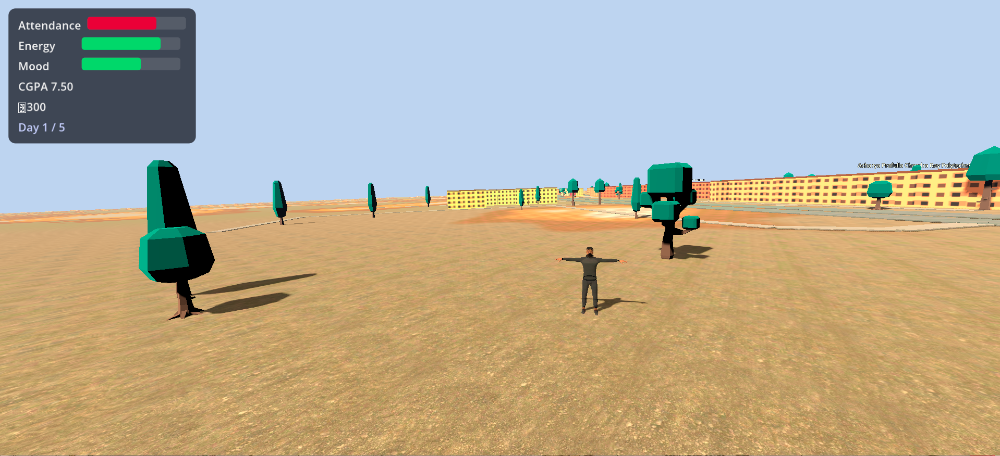
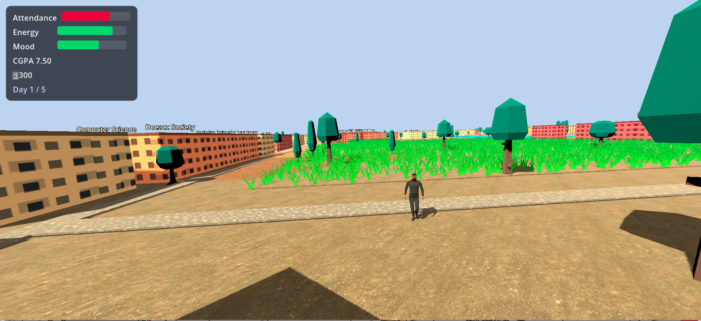
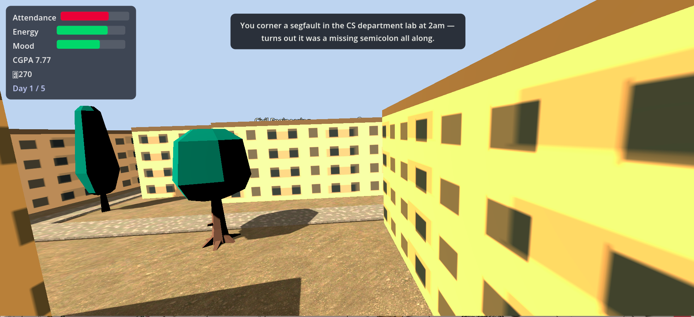
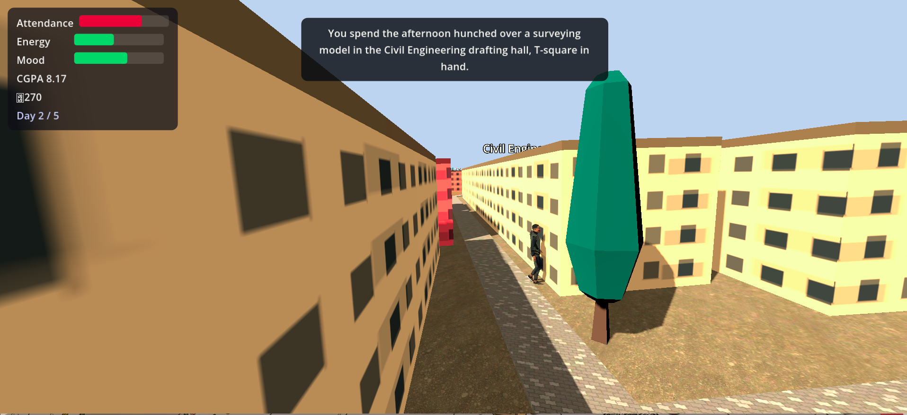

A full 3D reimagining of JU Simulator, built in the Godot engine — the same premise of surviving semesters and exploring campus life at Jadavpur University, now in 3D.

JU Simulator 2 carries over the same idea as the original — play as a student surviving the semesters while exploring Jadavpur University — but rebuilt from scratch as a full 3D experience in the Godot engine.
Moving to Godot meant rebuilding the campus as a 3D environment and reworking movement, camera, and interaction systems to take advantage of a proper game engine instead of the browser-based approach used in the first game.
Modeled and laid out a 3D recreation of the campus, implemented player movement and camera controls, and rebuilt the semester-survival gameplay loop using Godot's scene and node system with GDScript.


